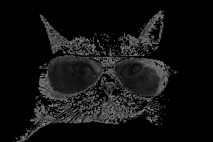
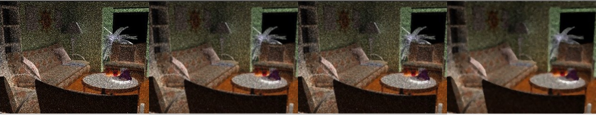
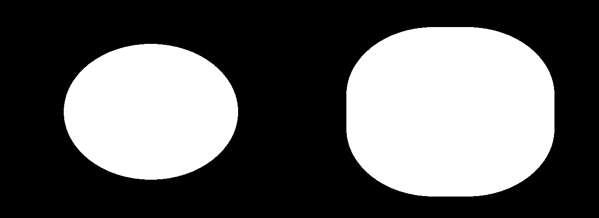
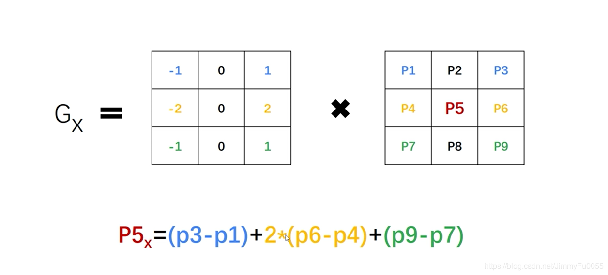
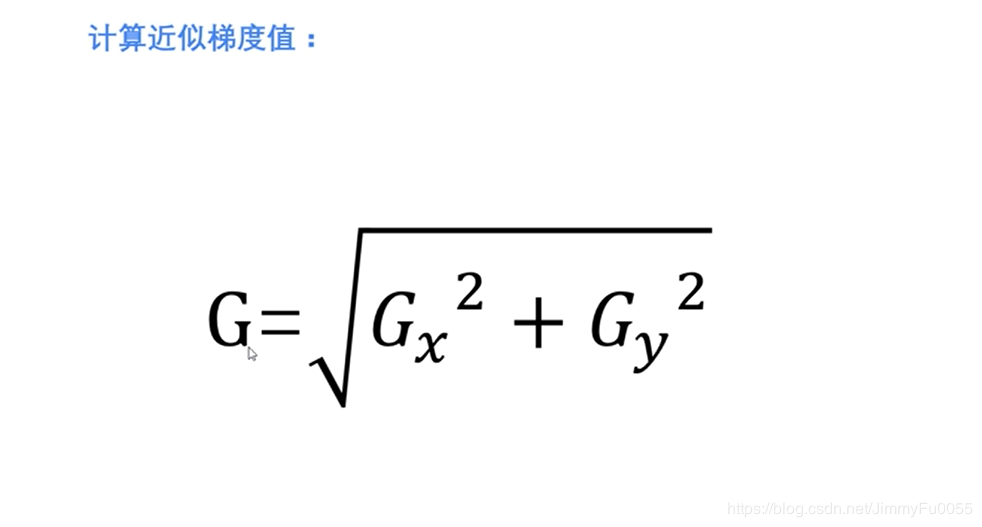
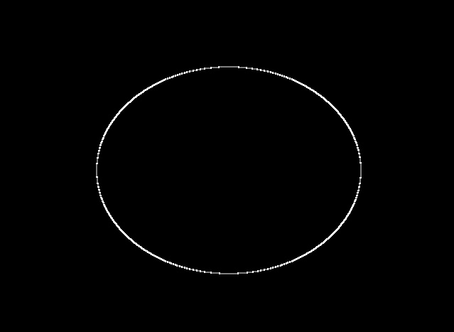

原文连接:https://www.cnblogs.com/lufengyu/p/11695658.html
一 图像阈值处理
准备一张灰度图像
阈值处理通常是设定一个阈值，让图片的所有像素点的值与其比较做出一系列的操作。
在opencv常用的阈值处理函数有五种，分别是THRESH_BINARY、THRESH_BINARY_INV、THRESH_TRUNC、THRESH_TOZERO、THRESH_TOZERO_INV。接下来分别看下这几种处理图片后的效果
1. THRESH_BINAR

# 像素值超过127的变成255，否则为0，亮的更亮
ret,threshold1 = cv2.threshold(img,127,255,cv2.THRESH_BINARY)2. THRESH_BINARY_INV
# 像素值超过127的变成0，否则为255，亮的更暗
ret,threshold2 = cv2.threshold(img,127,255,cv2.THRESH_BINARY_INV)
3. THRESH_TRUNC
# 像素值超过127的变成127，否则不变，理解成图片整体变暗
ret,threshold3 = cv2.threshold(img,127,255,cv2.THRESH_TRUNC)
4. THRESH_TOZERO
# 像素值超过127的不变，否则为0，理解成加大图片的对比度
ret,threshold4 = cv2.threshold(img,127,255,cv2.THRESH_TOZERO)
5. THRESH_TOZERO_INV
# 像素值超过127的为0，否则不变
ret,threshold5 = cv2.threshold(img,127,255,cv2.THRESH_TOZERO_INV) 阈值处理的使用场景我会在后续的博客中写出~~~
二 . 滤波
滤波的原理是通过指定大小的单位矩阵与图像做相关运算，具体的线性代数的东西这里不展开，若后续工作会深入，再回来完善...
经常使用到的滤波操作有三种，均值滤波、高斯滤波、中位值滤波。
1.均值滤波（通过求与单位矩阵做内积和的平均值做图像处理）
blur = cv2.blur(img,(3,3))
2. 高斯滤波 （根据正态分布处理图像，越靠近中心点，值越接近）
blur2 = cv2.GaussianBlur(img,(3,3),1)
3. 中位值滤波（取指定大小矩阵的所有元素值的中位值处理）

blur3 = cv2.medianBlur(img,5)
把这几张图片水平拼接观察，不难发现在处理噪点的场景中，使用中位值滤波效果最为明显

三. 腐蚀与膨胀
1. 腐蚀
img = cv2.imread("test.png")
img2 = cv2.erode(img,kernel=numpy.ones((9,9),numpy.uint8),iterations=9) 和单位矩阵做处理，迭代9次，意味这腐蚀的程度
cv2.imshow("IMage",numpy.hstack((img,img2)))
cv2.waitKey(0)
cv2.destroyAllWindows()
2. 膨胀 （嗯，和腐蚀操作刚好相反）

img2 = cv2.dilate(img,kernel=numpy.ones((9,9),numpy.uint8),iterations=9)
cv2.imshow("IMage",numpy.hstack((img,img2)))
cv2.waitKey(0)
cv2.destroyAllWindows()3. 梯度运算（膨胀-腐蚀）
4. 礼帽与黑帽
img2 = cv2.morphologyEx(img,cv2.MORPH_TOPHAT,kernel=numpy.ones((5,5),numpy.uint8)) # 就是腐蚀掉的部分
img3 = cv2.morphologyEx(img,cv2.MORPH_BLACKHAT,kernel=numpy.ones((5,5),numpy.uint8)) # 原始部分的外壳
四. 图像梯度与边缘检测
1.Sobel算子



这里的图片借鉴自https://blog.csdn.net/JimmyFu0055/article/details/83718901
Gx，Gy分别代表水平与竖直方向上的梯度
原图：
img = cv2.imread("test.png")
sobelx = cv2.Sobel(img,cv2.CV_64F,1,0,ksize=3) # 1,0代表求水平dx方向上的梯度
sobelx = cv2.convertScaleAbs(sobelx)
sobely = cv2.Sobel(img,cv2.CV_64F,0,1,ksize=3) # 0，1代表求水平dy方向上的梯度
sobely = cv2.convertScaleAbs(sobely)
sobelxy = cv2.addWeighted(sobelx,0.5,sobely,0.5,0)
sobelxy2 = cv2.Sobel(img,cv2.CV_64F,1,1,ksize=3) # 不推荐这一种方法求边界
cv2.imshow("IMage",sobelxy)
cv2.waitKey(0)
cv2.destroyAllWindows()结果：

结语：这段时间工作实在太忙了，不是评论提醒都快忘记继续写博客了，这部分的内容学过比较久了，今天整理一下方便他人也方便自己。
——2019-10-17 22:42:32